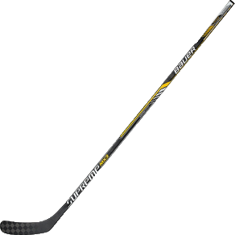

Bauer Supreme TotalOne MX3 Hockey Stick

$160
The terms Strength and Power have become synonymous with Bauer's Supreme stick line. That's because the line has been engineered to boost energy output. They have a mid-kick flex profile, which means a stiffer lower shaft and softer middle, allowing you to easily load the stick. You'll also find the Supreme power taper throughout the line, which further stiffens that bottom portion of the shaft in such a way that reduces the likelihood of twisting and torquing. These two forces combine for powerful and explosive shots that are also precise and controlled. If you liked the NXG, it is the predecessor to the Bauer Supreme TotalOne MX3, with the addition of improvements that reduce overall blade weight, improve stick balance and durability.
Bauer has an artillery of stick technology that they have unleashed on this stick. Monocomp technology is a single molding process which allows them to remove excess material, thus improving both performance consistency and balance. Their exclusive TeXtreme® technology is a strong carbon fiber that is 20% lighter than conventional carbon and is visibly recognizable throughout the stick because of its distinct large checker board pattern.